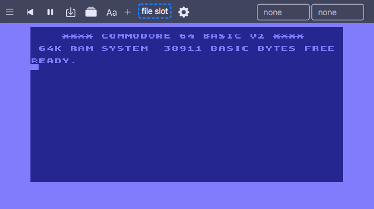
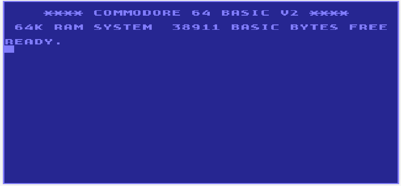
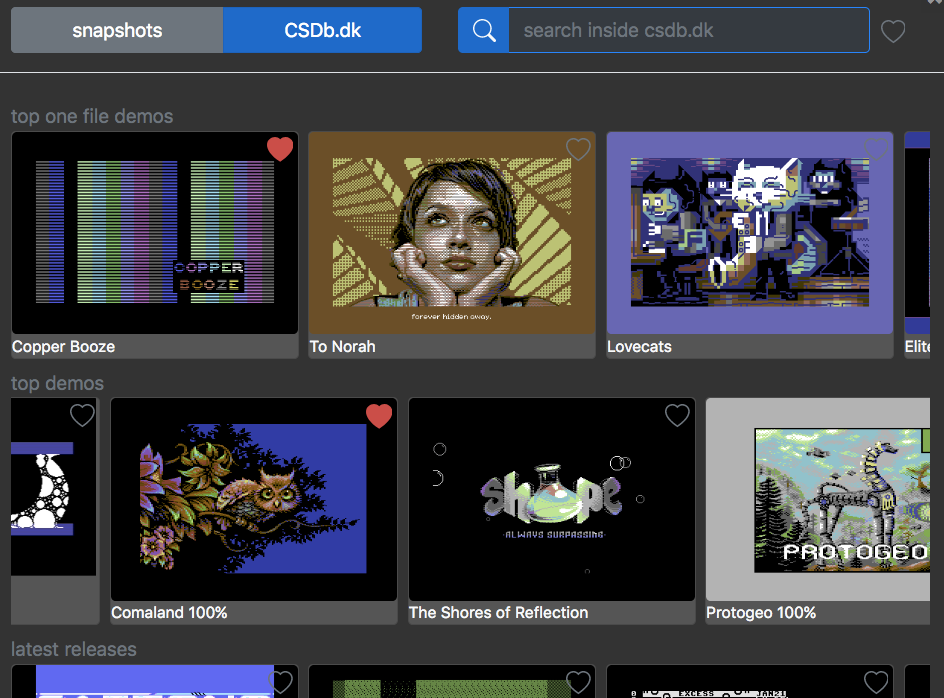
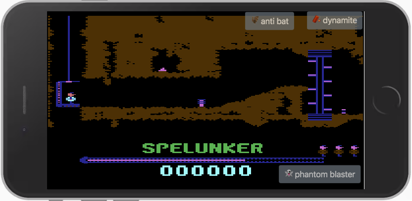

cinematic retro experience
you like a cinematic retro expierience, we got the wide screen button for you. vc64web always clevery adapts to the full window width ... if you decide it to do.

the big picture
going immersive deep without distraction with modern thin beezels on your beloved c64 titles on a modern device.

clean high quality sound
getting into the groove with clean and high quality sound ! we built in the latest resid processor and you can even double it.

ready to scroll scene browser ?
A gorgous view of the hottest demos is boosting you to easily select and instantly run them by just a click ..

code little action scripts
get your fingers dirty and code little scripts to beat games AI ... can your code beat the game designers code of the 80ties?

No keyboard ?
You are being on a touchscreen device right ? vc64web is perfectly prepared for this. Use the virtual keyboard or define keys and overlay action buttons and also remapping of keyboard keys is possible. There is a touch joystick.

Free Rom replacements
If you do not have legal access to the original Commodore Roms, you can run the emulator with the free Rom replacements that have been developed as part of the Mega65 project. Recent versions of these Roms ship with the emulator and can be installed with a single click in the Rom configuration panel.
The demo scene is great they surprise and amaze us every day with technical and artful new masterpieces for the Commodore C64 ... here are some of the most adored demos picked and hand selected by us.
Adventure
is it the first digital adventure ?
This is Adventure by Adams (1979). Commodore 64 version by Brian Howarth.
press Y then N and then the Enter key
Now you’re in a forest. You can see loads of trees and you can go in any direction.
GO EAST to a sunny meadow. There’s a dragon sleeping here so we better be quiet. There’s also a weird sign with something about mud. GO EAST again and you’re on the shore of a lake.
You can see water and a golden fish. There’s also a rusty axe with a magic word on it. GET AXE and GO NORTH to a quick sand bog. You’re stuck now. A small statue can be found here. GET OX and SAY BUNYON to free yourself from the quicksand. You can now SWIM to the shore. Oops.. did you read the sign?

to Norah
This artful demo runs parallel on two SIDs.
The demo was made by Wojciech Radziejewski (Shogoon) (2020 Elysium/Wrath Designs).

demos you have to see and hear
featured in this collection:
Aluminium Hearts in Love by Artline Designs (2020)
Elite Code Mechanics by Abyss Connection (2020)
Snake Booze by Booze Design (2020)
(for switch between demos click on the folder icon of the player when it is started and select the demo you like plus press enter or click mount ...)